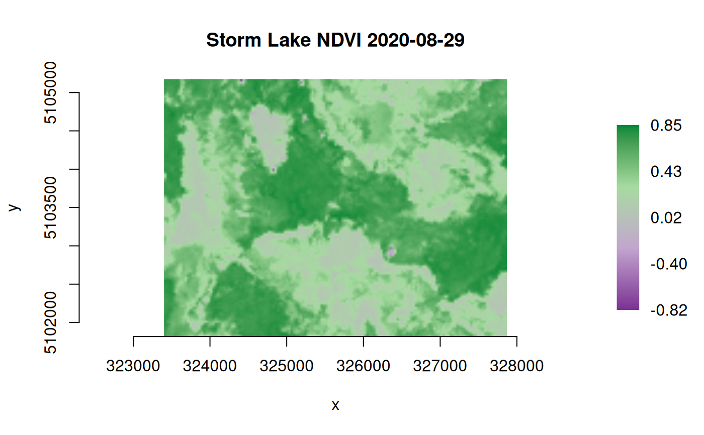

calc() evaluates an R expression for each pixel in a raster layer or
stack of layers. Each layer is defined by a raster filename or dataset
object, band number, and a variable name to use in the R expression. If not
specified, band defaults to 1 for each input raster. Variable names
default to LETTERS if not specified (A (layer 1), B (layer 2), ...).
All of the input layers must have the same extent and cell size.
The projection will be read from the first raster in the list of inputs.
Individual pixel coordinates are also available as variables in the
R expression, as either x/y in the raster projected coordinate system or
inverse projected longitude/latitude.
Multi-band output is supported as of gdalraster 1.11.0.
Usage
calc(
expr,
rasterfiles,
bands = NULL,
var.names = NULL,
dstfile = tempfile("rastcalc", fileext = ".tif"),
fmt = NULL,
dtName = "Int16",
out_band = 1L,
options = NULL,
nodata_value = NULL,
setRasterNodataValue = FALSE,
write_mode = "safe",
quiet = FALSE,
return_obj = FALSE,
...
)Arguments
- expr
An R expression as a character string (e.g.,
"A + B").- rasterfiles
Input rasters, either a character vector of filenames, or a list with each element either a filename as character string or an object of class
GDALRaster(must be an open dataset for the latter).- bands
Integer vector of band numbers to use for each raster layer.
- var.names
Character vector of variable names to use for each raster layer.
- dstfile
Either a character string with the output raster filename, or an object of class
GDALRasterwith which to write output. If given as an object, the dataset must be open for write access, and the arguments below related to raster creation are ignored (i.e.,fmt,dtName,options,setRasterNodataValue). Thewrite_modemust be set to"update"for writing with an existing dataset object.- fmt
Output raster format name (e.g., "GTiff" or "HFA"). Will attempt to guess from the output filename if not specified.
- dtName
Character name of output data type (e.g., Byte, Int16, UInt16, Int32, UInt32, Float32).
- out_band
Integer band number(s) in
dstfilefor writing output. Defaults to1L. Multi-band output is supported as of gdalraster 1.11.0, in which caseout_bandwould be a vector of band numbers.- options
Optional list of format-specific creation options in a vector of "NAME=VALUE" pairs (e.g.,
options = c("TILED=YES", "COMPRESS=LZW")to set LZW compression during creation of a tiled GTiff file).- nodata_value
Numeric value to assign if
exprreturnsNA.- setRasterNodataValue
Logical value.
TRUEwill attempt to set the raster format nodata value tonodata_value, orFALSEnot to set a raster nodata value on the output dataset.- write_mode
Character string. Name of the file write mode for output. One of:
safe- execution stops ifdstfilealready exists (no output written)overwrite- ifdstfileexists it will be overwritten with a new fileupdate- ifdstfileexists, will attempt to open in update mode, or write to the existing dataset ifdstfileis given as an object
- quiet
Logical value. If
TRUE, a progress bar and informational messages will not be displayed. Defaults toFALSE.- return_obj
Logical value. If
TRUE, an object of classGDALRasteropened on the newly created dataset will be returned. The default isFALSE.- ...
Additional arguments, none currently supported.
Value
By default, returns the output filename invisibly. An object of
class GDALRaster open on the output dataset will be returned
if return_obj = TRUE.
Details
The variables in expr are vectors of length raster xsize (i.e., row
vectors of the input raster layer(s), with length the number of raster
columns). The expression should return a vector also of length raster xsize
(an output row). Four special variable names are available in expr:
pixelX and pixelY provide pixel center coordinates in projection units.
pixelLon and pixelLat can also be used, in which case the pixel x/y
coordinates will be inverse projected to longitude/latitude
(in the same geographic coordinate system used by the input projection,
which is read from the first input raster). Note that inverse projection
adds computation time.
To refer to specific bands in a multi-band input file, repeat the filename
or dataset object in rasterfiles and specify corresponding band numbers in
bands, along with optional variable names in var.names, e.g.,
Output will be written to dstfile. To update a file that already
exists, set write_mode = "update" and set out_band to an existing
band number(s) in dstfile (new bands cannot be created in dstfile).
dstfile can optionally be given as an object of class GDALRaster open
for write access.
To write multi-band output, expr must return a vector of values
interleaved by band. This is equivalent to, and can also be returned as,
a matrix m with nrow(m) equal to length() of an input vector, and
ncol(m) equal to the number of output bands. In matrix form, each column
contains a vector of output values for a band.
length(m) must be equal to the length() of an input vector multiplied by
length(out_band). The dimensions described above are assumed and not
read from the return value of expr.
Examples
## Using pixel longitude/latitude
# Hopkins bioclimatic index (HI) as described in:
# Bechtold, 2004, West. J. Appl. For. 19(4):245-251.
# Integrates elevation, latitude and longitude into an index of the
# phenological occurrence of springtime. Here it is relativized to
# mean values for an eight-state region in the western US.
# Positive HI means spring is delayed by that number of days relative
# to the reference position, while negative values indicate spring is
# advanced. The original equation had elevation units as feet, so
# converting m to ft in `expr`.
elev_file <- system.file("extdata/storml_elev.tif", package="gdalraster")
# expression to calculate HI
expr <- "round( ((ELEV_M * 3.281 - 5449) / 100) +
((pixelLat - 42.16) * 4) +
((-116.39 - pixelLon) * 1.25) )"
# calc() writes to a tempfile by default
hi_file <- calc(expr = expr,
rasterfiles = elev_file,
var.names = "ELEV_M",
dtName = "Int16",
nodata_value = -32767,
setRasterNodataValue = TRUE)
#> output written to /tmp/Rtmp9Vygku/rastcalc254b6eb83ade.tif
ds <- new(GDALRaster, hi_file)
# min, max, mean, sd
ds$getStatistics(band = 1, approx_ok = FALSE, force = TRUE)
#> [1] 37.000000 57.000000 44.928763 4.384622
ds$close()
## Calculate normalized difference vegetation index (NDVI)
## input rasters given as dataset objects
## output to an in-memory raster (MEM format)
# Landast band 4 (red) and band 5 (near infrared):
b4_file <- system.file("extdata/sr_b4_20200829.tif", package="gdalraster")
b4 <- new(GDALRaster, b4_file)
b5_file <- system.file("extdata/sr_b5_20200829.tif", package="gdalraster")
b5 <- new(GDALRaster, b5_file)
expr <- "((B5 * 0.0000275 - 0.2) - (B4 * 0.0000275 - 0.2)) /
((B5 * 0.0000275 - 0.2) + (B4 * 0.0000275 - 0.2))"
(ndvi <- calc(expr, list(b4, b5), var.names = c("B4", "B5"), fmt = "MEM",
dtName = "Float32", setRasterNodataValue = TRUE,
return_obj = TRUE))
#> output written to in-memory-raster
#> C++ object of class GDALRaster
#> Driver : In Memory Raster (MEM)
#> DSN : in-memory-raster
#> Dim : 149, 112, 1
#> CRS : NAD83 / UTM zone 12N (EPSG:26912)
#> Res : 30.000000, 30.000000
#> Bbox : 323400.853100, 5101815.783500, 327870.853100, 5105175.783500
plot_raster(ndvi, legend = TRUE,
col_map_fn = c("#7b3294", "#c2a5cf", "#a6dba0", "#008837"),
main = "Storm Lake NDVI 2020-08-29")

ndvi$close()
b4$close()
b5$close()
## Reclassify a variable by rule set
# Combine two raster layers and look for specific combinations. Then
# recode to a new value by rule set.
#
# Based on example in:
# Stratton, R.D. 2009. Guidebook on LANDFIRE fuels data acquisition,
# critique, modification, maintenance, and model calibration.
# Gen. Tech. Rep. RMRS-GTR-220. U.S. Department of Agriculture,
# Forest Service, Rocky Mountain Research Station. 54 p.
# Context: Refine national-scale fuels data to improve fire simulation
# results in localized applications.
# Issue: Areas with steep slopes (40+ degrees) were mapped as
# GR1 (101; short, sparse dry climate grass) and
# GR2 (102; low load, dry climate grass) but were not carrying fire.
# Resolution: After viewing these areas in Google Earth,
# NB9 (99; bare ground) was selected as the replacement fuel model.
# look for combinations of slope >= 40 and FBFM 101 or 102
lcp_file <- system.file("extdata/storm_lake.lcp", package="gdalraster")
rasterfiles <- c(lcp_file, lcp_file)
var.names <- c("SLP", "FBFM")
bands <- c(2, 4)
tbl <- combine(rasterfiles, var.names, bands)
#> combining 2 rasters...
nrow(tbl)
#> [1] 449
tbl_subset <- subset(tbl, SLP >= 40 & FBFM %in% c(101,102))
print(tbl_subset) # twelve combinations meet the criteria
#> cmbid count SLP FBFM
#> 8 423 2 44 102
#> 10 421 1 49 102
#> 13 409 15 41 102
#> 37 365 1 44 101
#> 45 420 3 43 102
#> 93 283 17 40 101
#> 160 417 4 42 101
#> 225 397 11 42 102
#> 338 328 16 40 102
#> 346 338 10 41 101
#> 364 418 3 47 102
#> 408 341 2 43 101
sum(tbl_subset$count) # 85 total pixels
#> [1] 85
# recode these pixels to 99 (bare ground)
# the LCP driver does not support in-place write so make a copy as GTiff
tif_file <- file.path(tempdir(), "storml_lndscp.tif")
createCopy("GTiff", tif_file, lcp_file)
#> [1] TRUE
expr <- "ifelse( SLP >= 40 & FBFM %in% c(101,102), 99, FBFM)"
calc(expr = expr,
rasterfiles = c(lcp_file, lcp_file),
bands = c(2, 4),
var.names = c("SLP", "FBFM"),
dstfile = tif_file,
out_band = 4,
write_mode = "update")
#> output written to /tmp/Rtmp9Vygku/storml_lndscp.tif
# verify the ouput
rasterfiles <- c(tif_file, tif_file)
tbl <- combine(rasterfiles, var.names, bands)
#> combining 2 rasters...
tbl_subset <- subset(tbl, SLP >= 40 & FBFM %in% c(101,102))
print(tbl_subset)
#> [1] cmbid count SLP FBFM
#> <0 rows> (or 0-length row.names)
sum(tbl_subset$count)
#> [1] 0
# if LCP file format is needed:
# createCopy("LCP", "storml_edited.lcp", tif_file)